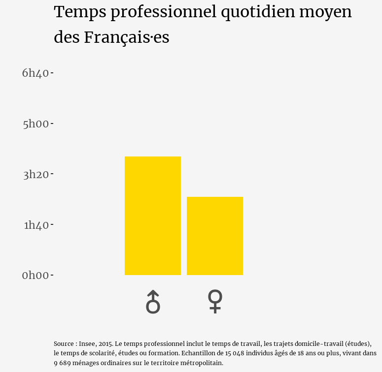
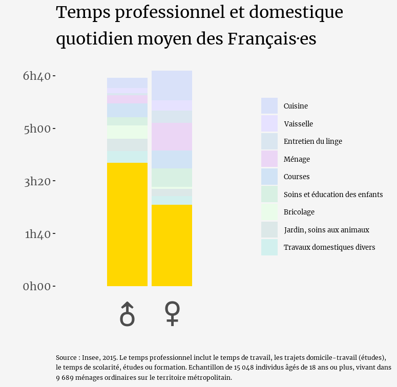
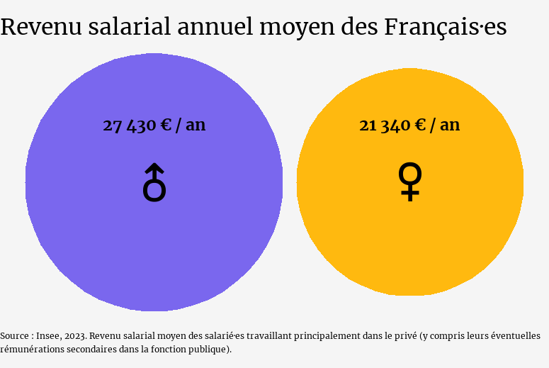
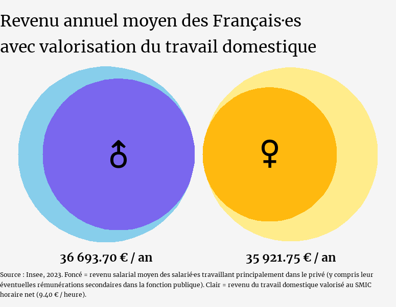

Travailler plus pour gagner moins
Le mois d'avril est déjà bien entamé, avec ses giboulées, ses bourgeons et ses journées qui s'allongent. C'est aussi le mois du passage à l'heure d'été : une heure de lumière gagnée le soir… mais une heure de sommeil envolée.
Du temps gagné, du temps perdu, du temps invisible : une transition parfaite vers le sujet qui nous occupe ce mois-ci.
Du temps invisible, une journée invisible
Le 1er avril, c'était le jour des farces et des poissons collés dans le dos, mais aussi, cette année, la Journée mondiale du travail invisible (ironique : elle reste encore largement méconnue, presque aussi invisible que son nom).
Initiée au Québec par l'Afeas (Association féminine d'éducation et d'action sociale), cette journée vise à mettre en lumière tout le travail qui reste dans l'ombre : tâches domestiques, soins aux enfants et aux proches, gestion du foyer, charge mentale…
Un travail en grande partie effectué par les femmes, et qui, s'il était rémunéré, représenterait une part substantielle du PIB mondial.
D'ailleurs, le 24 avril, je serai en ligne sur Zoom pour une conférence coorganisée avec l'Afeas !
Le thème : Charge mentale et travail invisible : regards croisés Québec-France.
Inscrivez-vous en cliquant ici ↓
Le travail invisible sous les projecteurs
Comment parler de ce qui, par définition, reste invisible ?
On peut déjà commencer par compter : combien de temps passons-nous chaque jour à travailler ?
Quand on parle de travail, on pense d'abord à ça :
Les Français travaillent en moyenne 3h54 par jour de manière rémunérée (ou pour leurs études). Les Françaises, 3h12.
Donc, elles travaillent moins. Normal qu'elles gagnent moins, non ? Normal aussi qu'elles passent plus de temps sur les tâches ménagères. Les hommes, eux, “travaillent”.
Ce qu'on ne voit pas, c'est ça :
En moyenne, les Françaises consacrent chaque jour 6h43 à leurs activités professionnelles et domestiques. Les Français, 6h36.
Pendant que les hommes travaillent, les femmes travaillent aussi… mais gratuitement.
Le problème : ce travail gratuit s'effectue entre quatre murs. Personne ne le voit (sauf quand la poussière n'est pas faite). Il n'est valorisé ni par l'entourage, ni par la société.
Selon l'Insee, le temps consacré au travail domestique représente 1 à 2 fois le temps de travail rémunéré, selon la définition retenue.
Valorisé au SMIC net, ce travail représenterait 423,7 milliards d'euros, soit près de 22 % du PIB.
Le travail domestique représente donc :
- un volume horaire massif,
- et un manque à gagner considérable pour les personnes qui en prennent la charge.
Seul le travail “professionnel” est reconnu, valorisé et rémunéré.
En 2023, les salaires moyens des femmes et des hommes affichent toujours un écart important.
Si on valorisait le travail invisible au SMIC net, les revenus annuels d'un·e Français·e moyen·ne pourraient ressembler à ceci :
Résultat : l'écart de revenus annuels entre hommes et femmes passerait de plus de 6 000 € à moins de 800 € !
Au-delà des chiffres : repenser notre rapport au travail
Ces visualisations nous invitent à réfléchir plus largement :
Comment mieux reconnaître, redistribuer et valoriser ce travail invisible ?
Comment l'intégrer dans nos politiques publiques, nos organisations professionnelles, nos dynamiques familiales ?
C'est ce dont nous parlerons le 24 avril prochain.
Inscrivez-vous dès maintenant à cette conférence co-organisée par T'as pensé à ? et l'Afeas, pour croiser les regards France-Québec sur le travail invisible.
Une conférence à deux voix, co-animée par moi-même et Emma Saffar, coordonnatrice de la Coalition pour l'équité du travail invisible au Canada, au sein de l'Afeas.
📍 Où ? En ligne, sur Zoom
📆 Quand ? Le 24 avril 2025 à 13h (Montréal) / 19h (Paris)
🕑 Combien de temps ? 1h
💸 Combien ça coûte ? C'est gratuit !
Cliquez ici pour vous inscrire
À très bientôt !
Je m'appelle Marie Vialaret. Je suis présidente de l'association tpà et conférencière sur les questions d'égalité de genre. Statisticienne de formation, je suis consultante indépendante en analyse de données.
Diplômée de la Toulouse School of Economics, j'ai ensuite étudié les statistiques appliquées à l'ENSAE ParisTech.